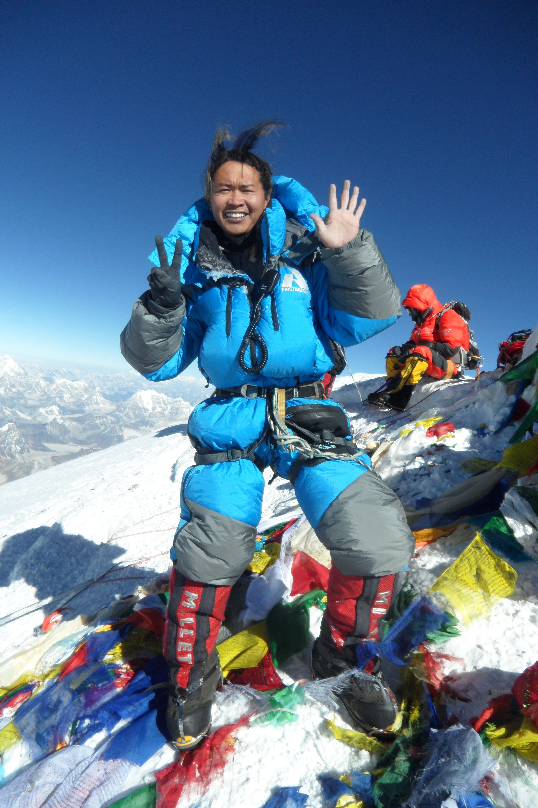
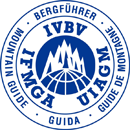
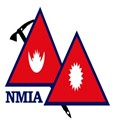

Chhering Dorjee Sherpa
Born in the remote village of Rolwaling in 1989, Chhering achieved the IFMGA certificaion in 2013 at the age of 23 being the youngest from Nepal. After completing his high school in 2006, Chhering started his mountaineering career when he finally summited Mt.Everest at the age of 19 in 2008. Since then he had summited Mt.Everest 7 times, thrice Manasalu summits and Cho-Oyu twice in three days difference in fall 2009. He is actively guiding in Himalaya, Andes, Alaska and Canadian Rocky Mountain Ranges where he achieved twice summits of Mt.Aconcagua(Highest Mountain in South America), Denali(Highest Mountain in North America),Mt.Rainier(Seattle,WA and many peaks in Canadian Rockies.
In 2014, Chhering also achieved Canadian Avalanche Level 1 certification in Canada. Became the member of NMIA in 2013 and actively working as mountaineering instructor in Nepal. During his guiding career he has guided bunch of American and Canadian wounded warrior where he was able to guide double leg amputee on the top of Aconcagua in 2015. He had also guided Everest Expedition successfully in Autumn 2010 creating ten years record break nobody summited in fall season. He is also certified IFSC climbing route setter and judge as well as mountaineering liasion offer in Nepal.